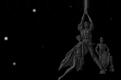
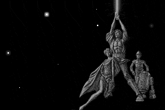

Star Wars Trilogy - Apprentice of the Force (USA) (Beta)
EEPROM 4K
Cartridge Identity
- Game Code
BCKE(FamilyBCK)- Header Title
SWAPPRENTICE- Maker / Revision
41/ rev0- ROM Size
- 8.0 MiB (8,388,608 B)
- Save Media
EEPROM 4K- SHA-256
3c75c4326997a92309b73a7fa26df68fdafaa55b564fb1757723b78db35b6ac3- Engine / SDK Group
comm-019(15 families)
Screenshots


Observed Battery Save Layout
- Fill Byte & Active Size
0x00fill · 92–92 / 512 B active (entropy 2.45 bits/B)- Active Offset Ranges
0x2–0x3,0x5–0x7,0x2A–0x2B,0x2D–0x2F,0x52–0x53,0x55–0x57,0x7A–0x7B,0x7D–0x7F, +8 more (25 total)- ASCII Magic / Headers
- None detected
- Observed Variable Regions
- 0 bytes across 0 spans: None
- Candidate Checksum/Counter Spans
- None
ROM Assets, Compression & Audio
- BIOS Compression
- LZ77 (
0x10): 83 streams · RLE (0x30): 0 streams - ROM Pointer Tables
- 24 tables (0 pointing to validated compressed streams)
- SDK Backup Tags
EEPROM_V124
Hardware MMIO Subsystems
ppu_display0x80982d0,0x809de2c,0x809ee74